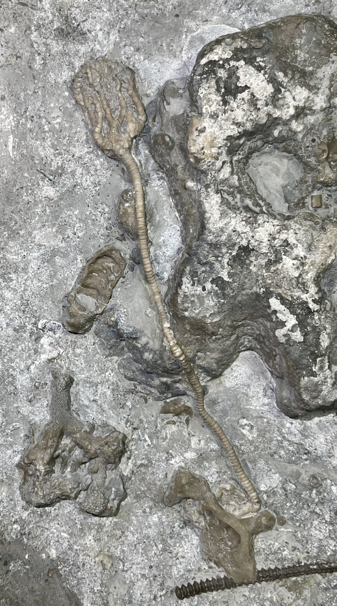
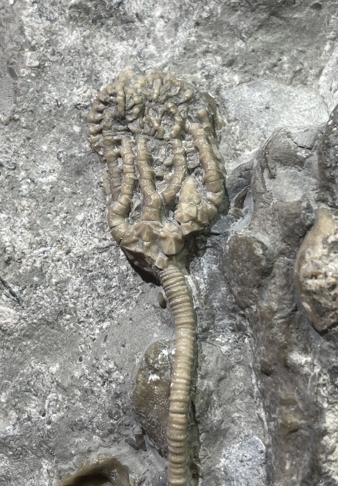
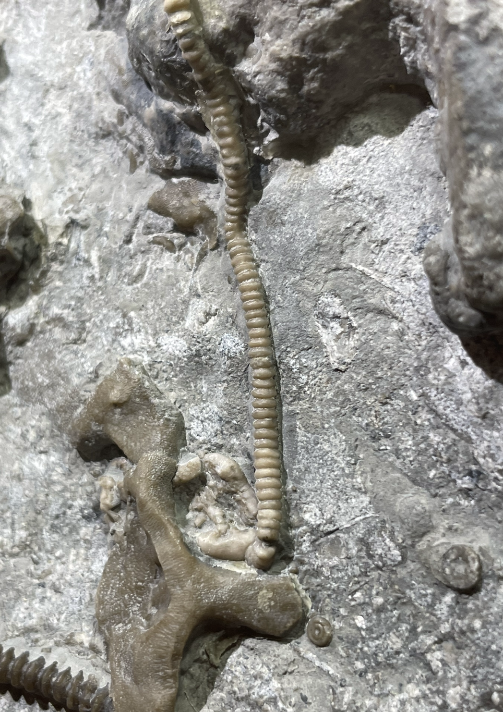

Konieckicrinus josephi
• Ordovician
• Bobcaygeon Formation
• Tomlinson Quarry, Brechin, Ontario
Size: 13 cm from crown to holdfast
A rare crinoid from the Bobcaygeon Formation, named after my fossil mentor and good friend Joseph Koniecki who contributed majorly to the Brechin crinoid fauna's study and description. This specimen is complete from crown to holdfast. Both Joe and Forest Gahn are of the opinion that the two described species of Konieckicrinus, "K. josephi" and "K. brechinensis", are actually one and the same; "K. josephi" would be a junior synonym of "K. brechinensis".
|

|